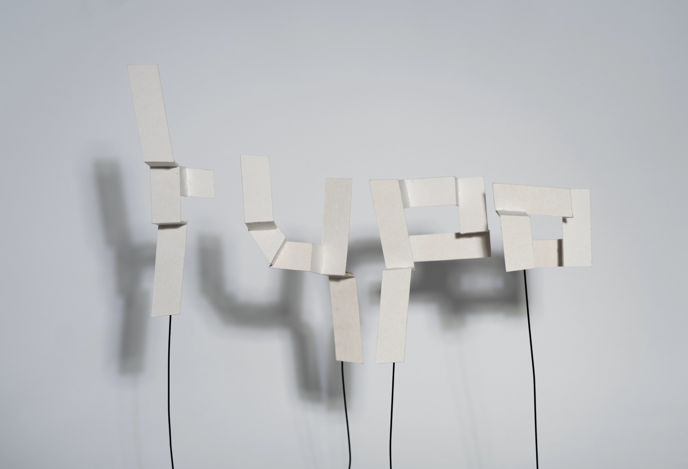
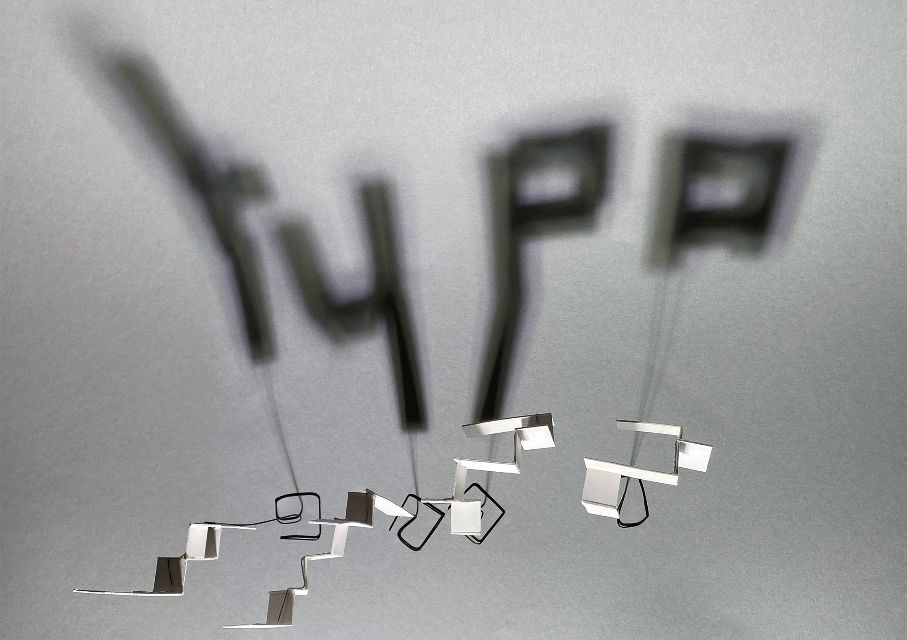
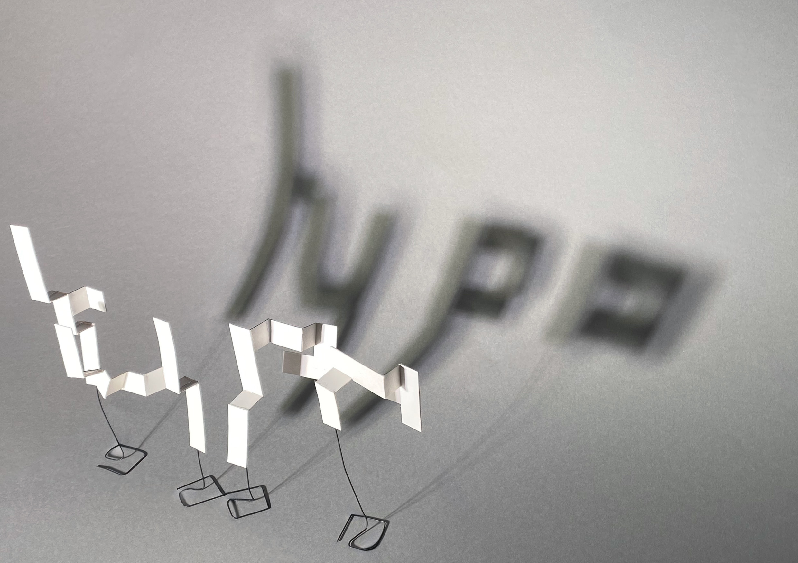
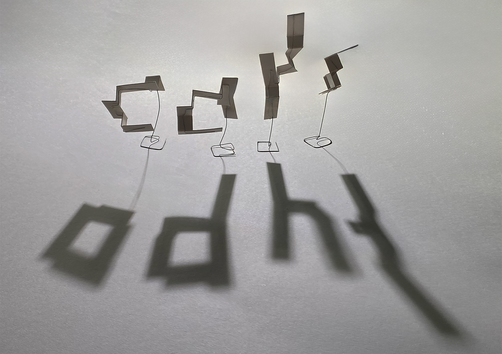
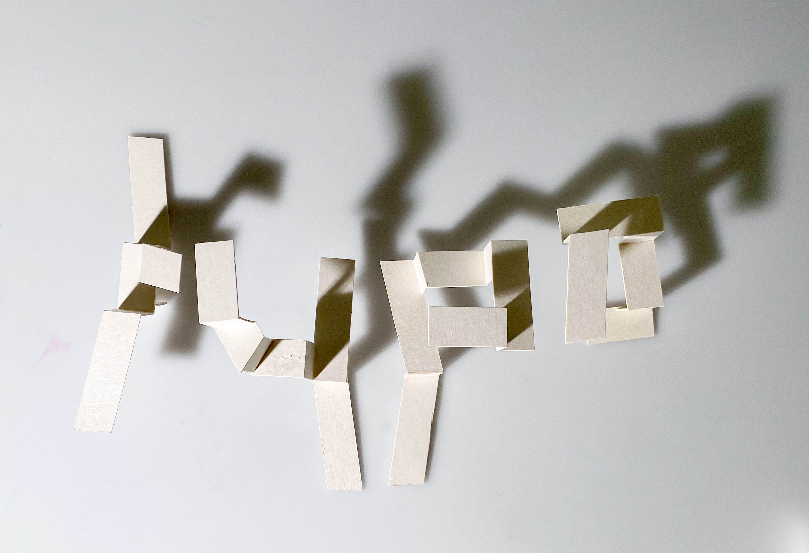
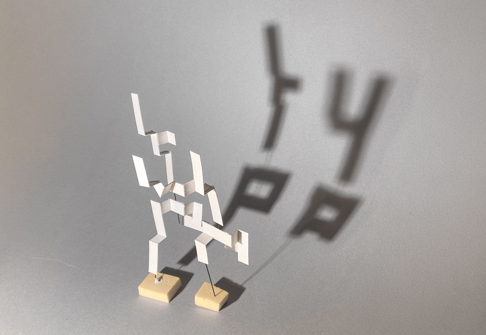

Inszenierte Typografie
Dieses Projekt fokussierte sich auf die Entwicklung dreidimensionaler Buchstaben-Skulpturen aus Karton und Draht. Die physische Konstruktion verlangte ein tiefes Verständnis für Materialität, um die fragmentierten, geometrischen Formen zu stabilisieren. Die anschliessende Fotografie wurde zur Disziplin der Lichtführung und perspektivischen Kontrolle. Durch den Einsatz von Schatten und gezielten Lichtakzenten wurde das Volumen der hellen Körper betont und ihre Textur hervorgehoben. Die Serie untersucht, wie die gewählte Perspektive die Wahrnehmung der statischen Objekte im Raum dynamisiert.






Projekt
2024
typografie